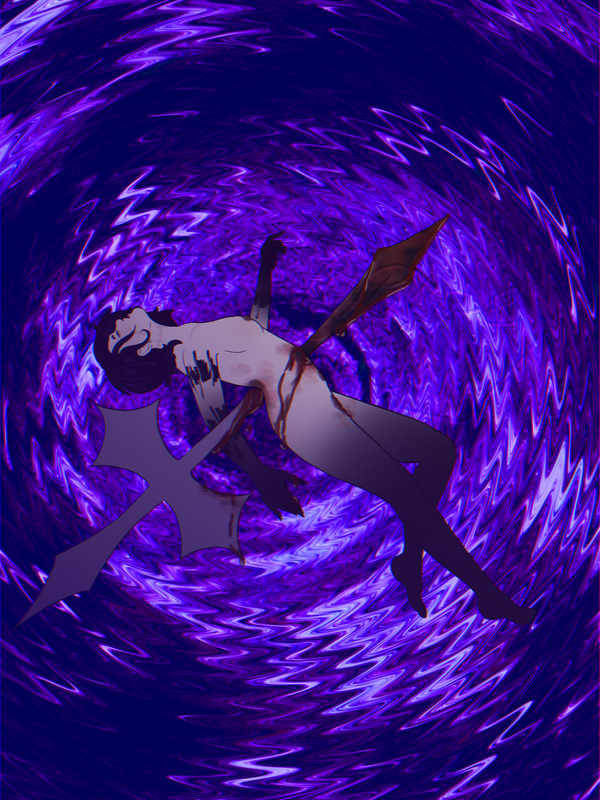

@pvrpl
Sintober Days 2 and 3: Rosary and Wings
Lower effort because I went to bed at like 3am and my brain feels like mush...
Thinking about using Sintober as a small crutch to build up some lore for Terminus because holy.
Lower effort because I went to bed at like 3am and my brain feels like mush...
Thinking about using Sintober as a small crutch to build up some lore for Terminus because holy.
Content warning: nudity, blood/gore, defamation of religious icons? (unsure about it ://)
Not my best wortk, seeing as the cross itself isn't fully rendered, but who cares I like it :3
